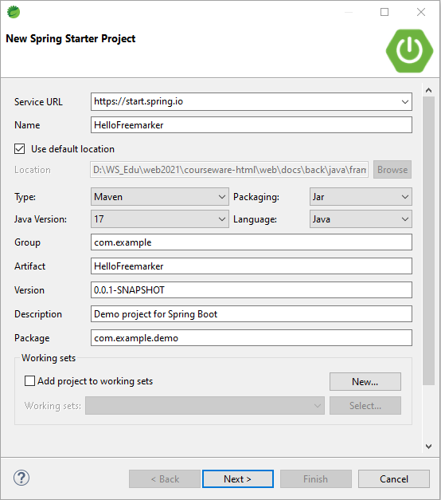
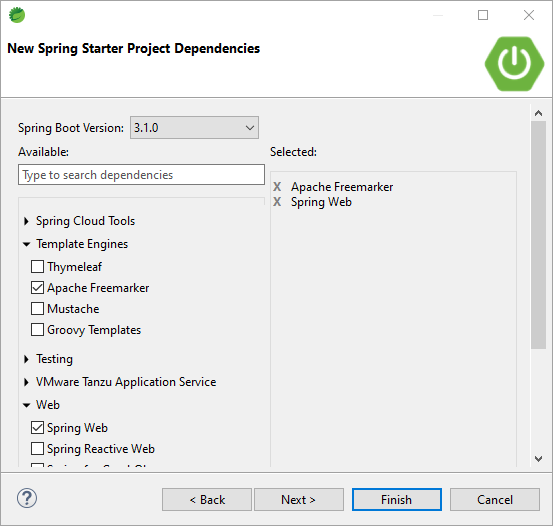

freemarker⯐

简介
Freemarker是一款模板引擎，它的发展历史可以追溯到2002年。当时，JavaServer Pages（JSP）是Java Web开发中最流行的技术之一，但是JSP的语法和标签库使得模板难以维护和重用。于是，Freemarker的创始人Daniel Dekany开始开发一款新的模板引擎，它的目标是提供一种简单、灵活、易于维护和重用的模板语言。
Freemarker的第一个版本于2003年发布，它的语法和JSP完全不同，但是它提供了类似于JSP的标签库和表达式语言。随着时间的推移，Freemarker不断发展壮大，增加了更多的功能和特性，例如自定义指令、宏、条件语句等等。Freemarker也逐渐成为Java Web开发中最受欢迎的模板引擎之一，被广泛应用于各种Web框架和应用程序中。
Freemarker具有以下特点:
-
Freemarker适合被设计用来生成HTML Web页面，特别是基于MVC模式的应用程序。
-
虽然Freemarker 具有一些编程的能力，但通常由Java程序准备要显示的数据，由Freemarker 生成页面，通过模板显示准备的数据 。
-
Freemarker 不是一个Web应用框架，而适合作为Web应用框架一个组件。
-
Freemarker 与容器无关，因为它并不知道HTTP或Servlet。
-
Freemarker 更适合作为Model2框架（如Struts）的视图组件，你也可以在模板中使用JSP标记库。
原理
数据模型＋模版＝输出

Spring Boot集成
安装
在 pom.xml 添加以下依赖：
开发流程
下面是使用spring-boot-starter-freemarker的流程：
在pom.xml文件中添加spring-boot-starter-freemarker依赖：
在application.properties或application.yml文件中配置Freemarker相关属性：
创建Freemarker模板文件，例如index.ftl：
配置
关于spring-boot-starter-freemarker的配置参数，常见的有以下几个：
| 参数名 | 描述 | 默认值 |
|---|---|---|
| spring.freemarker.allow-request-override | 是否允许覆盖请求属性 | true |
| spring.freemarker.cache | 是否启用模板缓存 | true |
| spring.freemarker.charset | 模板文件编码 | UTF-8 |
| spring.freemarker.check-template-location | 是否检查模板文件位置 | true |
| spring.freemarker.content-type | 模板文件的Content-Type | text/html |
| spring.freemarker.expose-request-attributes | 是否将请求属性暴露给模板 | false |
| spring.freemarker.expose-session-attributes | 是否将会话属性暴露给模板 | false |
| spring.freemarker.expose-spring-macro-helpers | 是否将Spring宏助手暴露给模板 | true |
| spring.freemarker.prefer-file-system-access | 是否优先使用文件系统访问模板 | true |
| spring.freemarker.suffix | 模板文件后缀 | .ftl |
Hello World!
在STS中创建新工程，选择Spring Starter Project向导

输入工程基本信息：
- Service URL: https://start.aliyun.com
- Name: HelloFreemarker

为工程选择Spring Web依赖，支持Spring及Spring MVC

工程创建向导完成后，Mavan配置文件pom.xml的关键依赖如下：
源代码
在com.example.demo下创建类Hi1Controller：
源代码
在src/main/resources/templates下创建类hi1.ftl：
在com.example.demo下创建类Hi2Controller：
源代码
在src/main/resources/templates下创建类hi2.ftl：
向导完成后生成的目录结构如下：
在Boot Dashboard中启动HelloFreemarker
在浏览器访问http://localhost:8080/hello1，结果如下：
在浏览器访问http://localhost:8080/hello2，结果如下：
基本语法
FreeMarker标记
标准的FTL标记指令
if, else, elseif
switch, case, default, break
list, break
include
Import
assign
macro, nested, return
if, else, elseif指令
switch, case, default, break指令
list, break指令
关键字item_index:是list当前值的下标item_has_next:判断list是否还有值
include指令
import指令
assign指令
生成变量,并且给变量赋值 常用的语法形式:
macro, nested, return指令
输出
内建函数
Freemarker提供了许多内置函数来处理模板中的数据。这些内置函数可以分为以下几类：
-
字符串处理函数：这些函数用于处理字符串，例如截取、替换、转换大小写等。常用的函数包括substring、replace、capitalize等。
-
数字处理函数：这些函数用于处理数字，例如四舍五入、格式化等。常用的函数包括round、number、currency等。
-
集合处理函数：这些函数用于处理集合，例如排序、过滤、查找等。常用的函数包括sort、filter、contains等。
-
时间处理函数：这些函数用于处理时间，例如格式化、计算时间差等。常用的函数包括date、time、datetime等。
-
条件判断函数：这些函数用于进行条件判断，例如判断是否为空、是否相等等。常用的函数包括if、exists、equals等。
-
其他函数：这些函数包括一些其他的常用函数，例如输出、循环、引入模板等。常用的函数包括print、list、include等。
使用这些内置函数的语法非常简单，只需要在模板中使用函数名和参数即可。例如，使用cap_first字符串中的首单词的首字母大写语法如下：